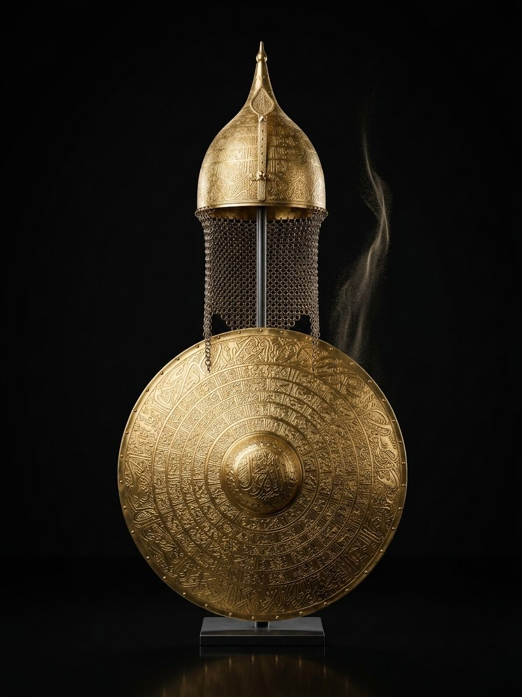

Bu özel minyatür set, Osmanlı ordusunun törenlerde sergilediği zarafeti ve Türk metalürji sanatının inceliğini sergi vitrinlerine taşıyan bir tasarımdır.
Set içerisindeki miğfer, kalkan ve at alınlığı, geleneksel kalem işi teknikleriyle üretilmiş ve dönemin törensel ihtişamını yansıtan değerli taşlarla bezenmiştir.
Kategori: İhtisas Hediyelikleri